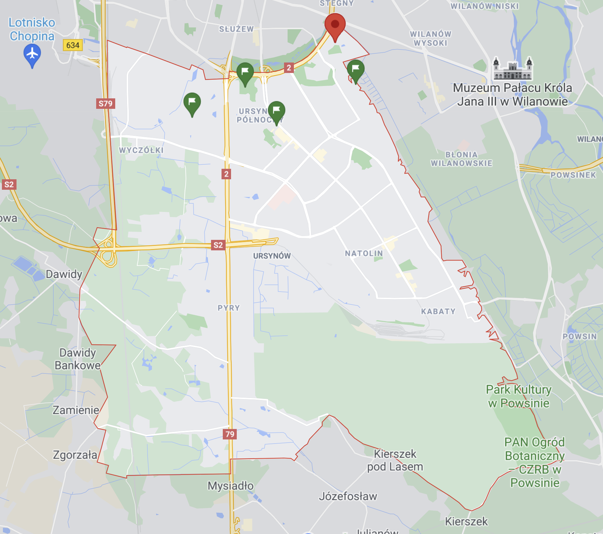
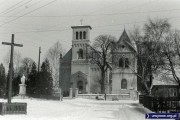
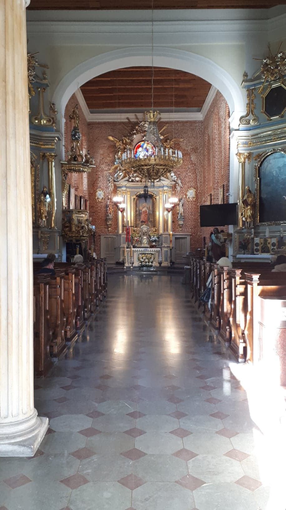
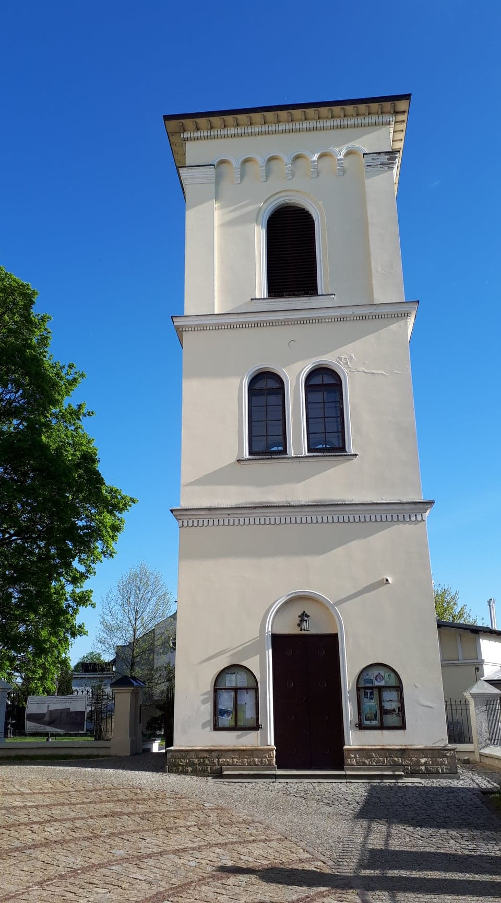
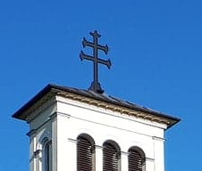
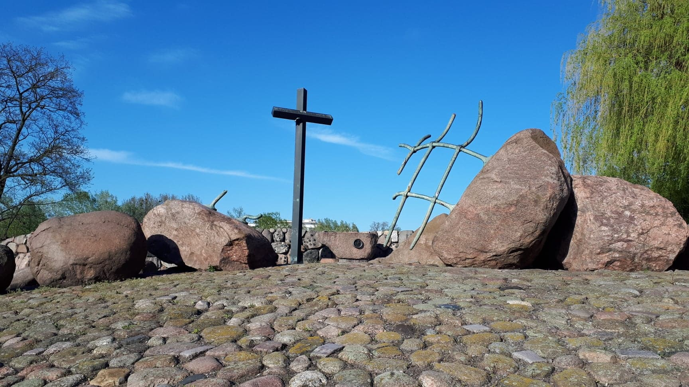

Kościół św. Katarzyny jest najstarszym kościołem na Ursynowie. Kościół znajduje się na Służewiu.
Parafia św. Katarzyny została ufundowana w 1238 roku przez Konrada Mazowieckiego. Do 1945 należała ona kolejno do Służewskich, Czartoryskich, Potockich i Brannickich. Przypuszczalnie na miejscu parafii kiedyś znajdował się ośrodek kultu pogańskiego. W XIII w. powstał kościół drewniany, a w późnym średniowieczu murowany kościół gotycki, który był przebudowywany w 1742 i 1848.
Wnętrze kościoła zostało zniszczone w czasie potopu szwedzkiego. Wnętrze zostało wtedy ozdobione przez zakład rzeźbiarski Jana Plerscha w stylu warszawskiego baroku. Zespół Andrzeja Kossa z warszawskiej ASP wykonał dodatkowe rzeźby w 1987. We wnętrzu kościoła znajdują się obrazy Jerzego Maciejewskiego z lat 90.
Dzwonnica powstała w 1881 roku na miejscu poprzedniej, a najstarszy dzwon pochodzi z nieistniejącego już kościoła św. Jerzego.
Na szczycie kościoła znajduje się interesujący krzyż z dwoma belkami poprzecznymi (krzyż Caravaca). Jest on wzorowany na relikwiarzu, w którym są przechowywane domniemane drzazgi z krzyża Chrystusa.
Pod kościołem znajduje się Pomnik Męczenników Terroru Komunistycznego 1944-1956.
